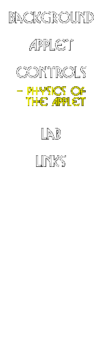

|  |
Mechanics of the Applet
I. Evolving the model
How do we simulate interacting galaxies? If we know an objects position (x)
and velocity (v), and if we can calculate the acceleration (a) on it, then we
can "step it forward in time" by the formula combined formulae
xnew = x + v·dt + ½·a·(dt)²
vnew = v + a·dt
which gives us the new position and velocity after a time dt. So how do we calculate the acceleration? It all comes down to the force of gravity. Something at a distance r from an object of mass M will feel an acceleration due to gravity of -GM/r ², where G is the gravitational constant. If there are two massive objects, you just add together the gravitational acceleration from each object. So the stars orbiting a given galaxy in the applet feel the acceleration from their own galaxy (which makes them orbit inside their galaxy) plus an acceleration from the other galaxy (which tries to pull them off their orbit).
To calculate the force from a galaxy, we treat the galaxy as having a fixed shape (see SIII below for more on this). This allows us to make an analytic calculation of the gravitational force. In reality, however, the shape of the galaxy changes as it interacts with its partner, simply because the partner's gravity is pulling it out of shape. To calculate this in a fully self-consistent manner is hard (you need to calculate all the gravitational forces between all the stars and dark matter particles which make up the galaxies!), and takes a very large amount of computing time to get it right (ie we cant do it in a real time applet). So the use of a fixed shape for the galaxies speeds up the calculations enormously, but sacrifices some accuracy. However, the basic gravitational physics is still well-modeled, once we apply a bit of a trick (called the Chandrasekhar dynamical friction formula, see SII) to allow galaxies to merge. (If you want to see examples of fully self-consistent modeling, go to the Links page and follow links to models of colliding galaxies.) So the way the model is evolved is to
- Initialize the positions and velocities of the stars and galaxies.
- Calculate the force acting on each of the stars from the two galaxies.
- Calculate the force acting on each galaxy from the other galaxy.
- Step the stars and galaxies forward by a small timestep dt.
- Go back to 2.
Galaxies merge because of dynamical friction, which is a pseudo-frictional force which occurs when a massive object moves through a sea of lower mass particles. This distorts the background sea of particles, creating an enhancement of density behind the massive object, pulling it back from its direction of motion. This is exactly what we have here -- a massive galaxy moving through a sea of dark matter particles (the other galaxy's halo). This dynamical friction brakes the galaxies on their orbit, and causes them to merge.
Unfortunately, in a model like Galaxy Crash, which holds the potential of the
galaxies fixed in time, dynamical friction does not occur (in short, we have
simplified the problem too much). But we can make an analytic approximation
to dynamical friction, known as the Chandrasekhar formula. This formula
says that the galaxies should feel a frictional force due to dynamical
friction which is proportional to M · rho / v ², where M is the mass of the
big object, rho is the density of the background sea, and v is the speed
at which the big object is moving. So in Galaxy Crash, we can calculate for
each galaxy, its speed and the density it is moving through, and apply this
Chandrasekhar formula to mimic the frictional force it should experience.
III. Galaxy models
As we said, we treat the mass distribution of the galaxies as fixed
with time (even though they would in practice become very distorted) --
in other words, the gravitational potential of each galaxy does not
change. So what does it look like? We use a spherical density distribution
known as the logarithmic potential, where the mass inside a radius r
is proportional to